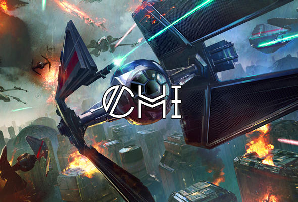

About Us
Chi is a young SIGMA ALLIANCE guild, created in August 2017. We are currently a hAAT guild, designed to give newer players an organized and dedicated starting point in SWGOH. Our guild and raid times are established primarily to be friendly for European time zones. We are a young, but energetic guild with a strong base of members who are excited to grow together as a guild. Our guild refresh time is at 5:30pm GMT.
Chi Leadership:
- Guild Leader: Cristii
- Guild Officers: Fonz, Harrison Ford, Sam Vimes, KzedEZ, sront, LUCASlousa, Crsepe, and Sith Hunter
Requirements for Membership
Chi is currently a HAAT guild. We require a minimum of 1.4M GP, and require members to create a swgoh.gg profile, use Discord for guild chat, and follow guild rules as outlined below.
Raid Info
T7 Rancor Raid:
- We are currently running T7 rancor raids.
- We open raids at 6:30pm GMT
- After the raid is launched, the first 24 hours is a zero damage phase. This allows all members time to ‘register’ for the raid, and become eligible for raid rewards.
- After the 24 hour zero damage phase, an officer will call ZERG. Once ZERG has been called, members are free to post damage.
- If you can solo at least 1 phase of the rancor, wait an additional 15 minutes are zerg time to give others a chance to get their attacks done
- If you find these raid rules confusing, you aren’t the first! Please check out this youtube video, which helps to explain some of these raid rules.
hAAT Raid:
- Raid Launch is at 5:30 pm Eastern / 19:30 GMT.
- After the raid is launched, the first 24 hours is a zero damage phase. This allows all members time to ‘register’ for the raid, and become eligible for raid rewards.
- After the 24 hour zero damage phase, an officer will call ZERG. Once ZERG has been called, members are free to post damage.
Guild Rules
- Discord
- All members must have a Discord account, and check in on Discord regularly, ideally once or twice a day. Raid announcements, guild updates, and other information is primarily distributed through Discord. We encourage all members to be active on Discord, as Discord offers access and interaction with other members within the SIGMA ALLIANCE community.
- Please keep Discord chat content PG-rated.
- Please do not troll or spam in the Discord chat rooms.
- Please be respectful and polite towards others.
- Lowest scorer in the Sith Raid must sit out the next week's Rancor and AAT raids
- Ticket Contribution
- All members should be aiming to contribute 600 tickets per day.
- Minimum ticket contribution is 600 tickets per day.
- Post in #leave_of_absence channel on Discord if you’ll be away from the game and unable to complete tickets.
- 24 Maximum Galactic War Battles
- On every Tuesday/Wednesday, the guild activity is Galactic War battles. While it is possible to potentially achieve 36 battles, we require members to limit themselves to 24 battles maximum. This gives everyone in the guild the ability to reach #1 rank for contribution for the day.
- The penalty for going over 24 nodes will be immediate removal from the guild and re-invitation back after guild refresh.
- Other Rules
- Please respect the guild leadership. Our officers work very hard to make the guild run smoothly. Sometimes mistakes get made. Please be understanding, and if you are unhappy with something, or feel you have been treated unfairly, please openly bring it to the attention of an officer or the guild leader.
- No one is to post zero on the Sith Raid. Posting a zero will result in 1 warning, and subsequent zeros will result in removal from the guild. A minimum of 1M is required by all members
- If you are unsure of any of the rules, please check out this youtube video, which answers some frequently asked questions!
Disciplinary
Penalties for breaking guild rules will be at the discretion of guild leadership. Generally speaking, we’re pretty understanding here in Chi, and have a lot of newer folks, so honest mistakes and minor rule violations are typically handled with a warning. For more serious violations, we generally use a three-strike system:
- 1st Strike = Post zero damage on next rancor raid
- 2nd Strike = Sit out next rancor raid completely
- 3rd Strike = Potential removal from guild